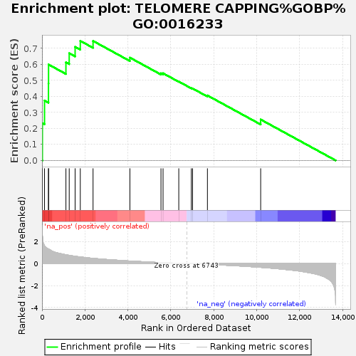
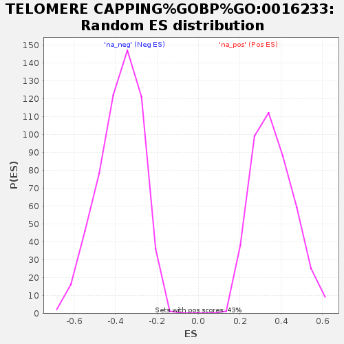

| | | Dataset | GSEA_GSE185657 |
| Phenotype | NoPhenotypeAvailable |
| Upregulated in class | na_pos |
| GeneSet | TELOMERE CAPPING%GOBP%GO:0016233 |
| Enrichment Score (ES) | 0.74692714 |
| Normalized Enrichment Score (NES) | 2.0676877 |
| Nominal p-value | 0.0 |
| FDR q-value | 0.010463581 |
| FWER p-Value | 0.108 |
Table: GSEA Results Summary

Fig 1: Enrichment plot: TELOMERE CAPPING%GOBP%GO:0016233
Profile of the Running ES Score & Positions of GeneSet Members on the Rank Ordered List

Fig 2: TELOMERE CAPPING%GOBP%GO:0016233: Random ES distribution
Gene set null distribution of ES for TELOMERE CAPPING%GOBP%GO:0016233